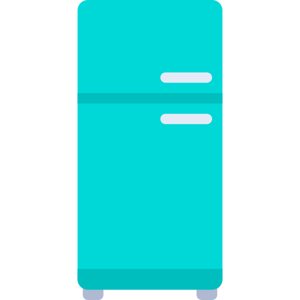
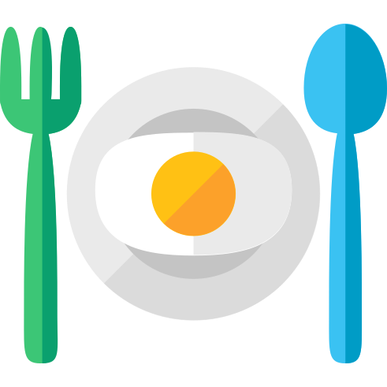
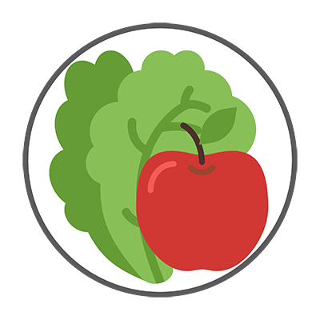

ABOUT US
Meal.io helps manage perishable food in order to reduce food waste. Users can create a grocery list, add the food purchased to the fridge and finally create meal plans.

Create your shopping list before you go shopping and
check off the items as you buy them. Bought items are added to the Fridge.

Bought items are displayed in four categories, Fruits & Vegetables, Meats,
Dairy and Other items. All items can also be searched using the search bar.

Create your own meals using items from the fridge
or view previously saved meals.
Meet the Team

Meal.io was created by first term BCIT CST students. The app was built over a 5 week period using Bootstrap, React Javascript framework and FireBase for database.